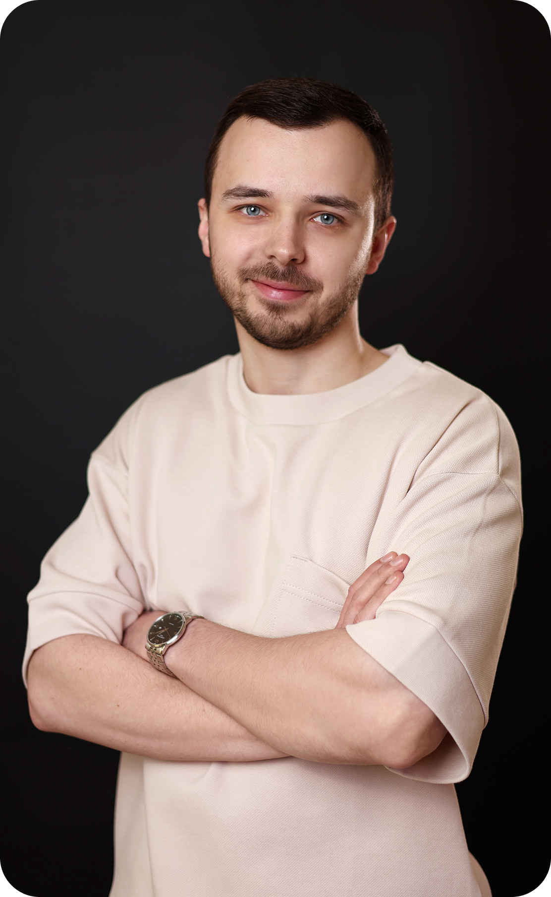
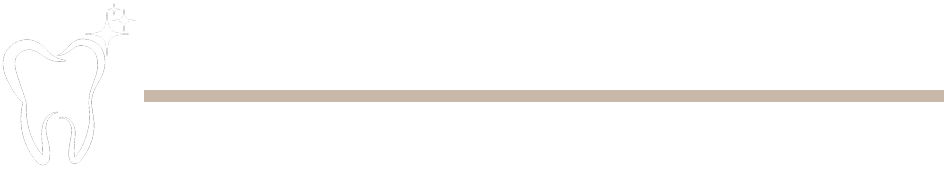
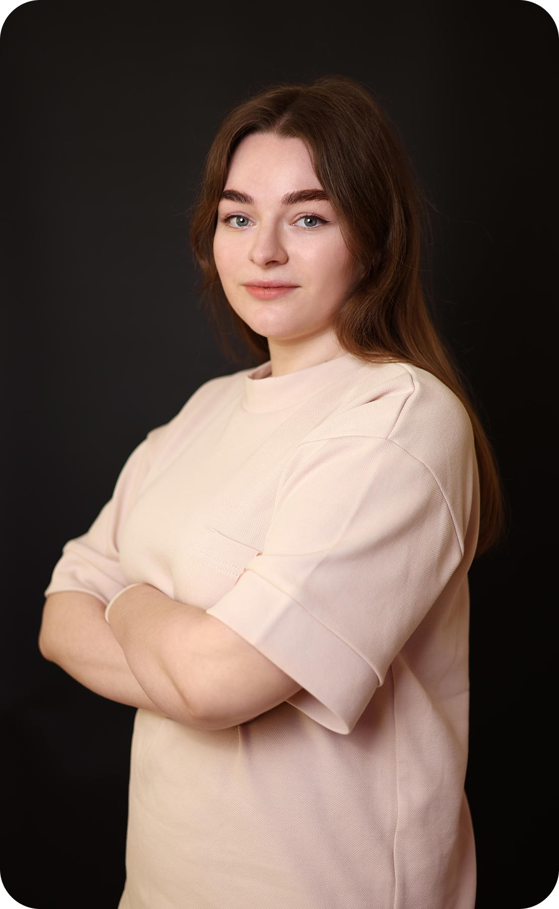
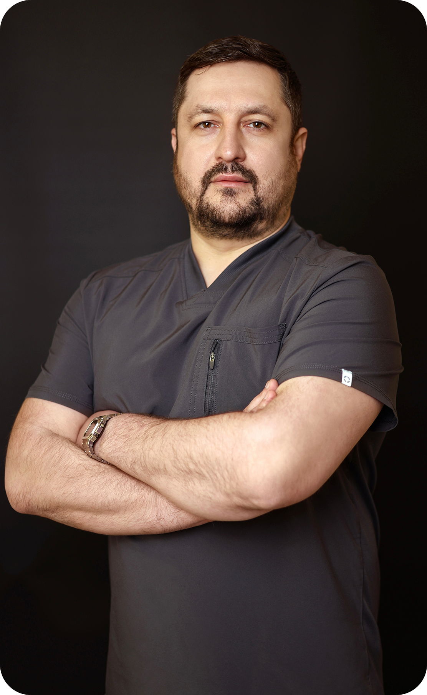

Лікарі

Дзюба Руслан
Вячеславович
Засновник та головний лікар, лікар-ендодонтист, ортопед

Складні кореневі канали, переліковані зуби, зламані інструменти в каналах — це щоденна практика в його роботі. Лікування проводиться під мікроскопом, де важлива кожна деталь, точність і контроль на всіх етапах.
Окрім ендодонтії, лікар спеціалізується на ортопедії та естетиці: створює вініри, відновлює форму зубів, функцію та гармонію усмішки.

Юренко Дарія
Романівна
Лікар-ортодонт
Дарія Романівна допомагає пацієнтам отримати рівну, здорову та гармонійну усмішку, спираючись на сучасні методи ортодонтичного лікування та точну діагностику.
Основні напрямки роботи:
• корекція прикусу
• встановлення брекет-систем
• лікування елайнерами
• комплексне ортодонтичне лікування

Бовсуновський Іван
Миколайович
Хірург-стоматолог
Іван Миколайович — лікар, який поєднує точність, спокій і високий рівень професіоналізму.
Пацієнти цінують його за чіткість у поясненні плану лікування, впевненість у діях та вміння створити комфортну атмосферу під час прийому.
Він уважний до кожного пацієнта, працює делікатно та з повагою, забезпечуючи якісний і прогнозований результат навіть у складних клінічних ситуаціях.